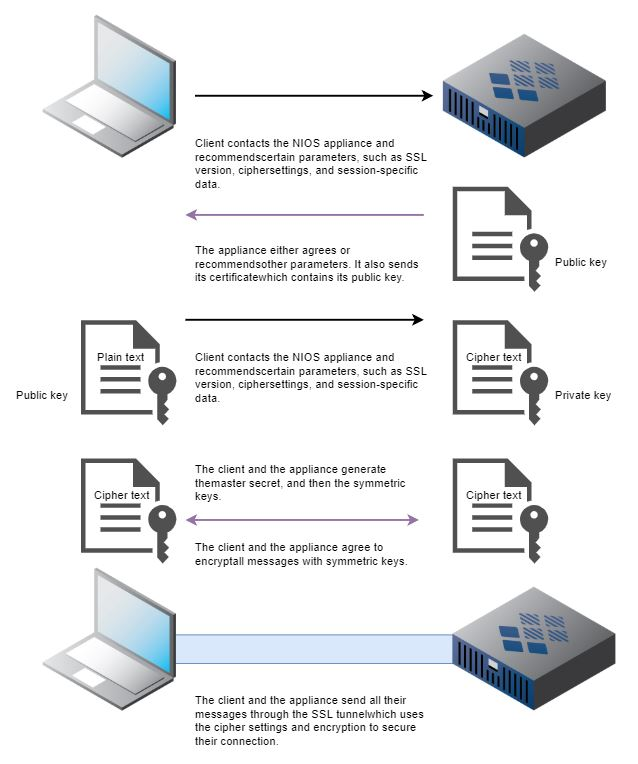
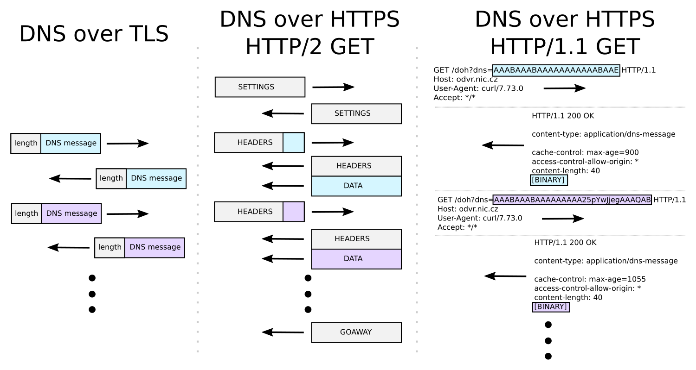

🌐 DNS & Domain-Konzepte
i
DNS ist im Grunde das Telefonbuch des Internets: Menschen merken
sich Namen (google.com), Computer brauchen aber Nummern
(IP-Adressen). DNS übersetzt zwischen den beiden.
i
Nach dem Deployment auf GitHub Pages hast du eine echte, öffentlich erreichbare Domain. Dieses Modul erklärt die wichtigsten DNS-Konzepte dahinter und generiert dir Beispiel-Einträge für deine eigene Domain.
📺 Vertiefung: DNS einfach erklärt | Was ist ein DNS? (Jan Pörtner)
A-Record
Ein A-Record (Address Record) übersetzt einen
Hostnamen direkt in eine IPv4-Adresse. Er wird meist
auf der "nackten" Domain (Apex, z.B. beispiel.ch)
verwendet, weil man dort keinen CNAME setzen darf.
beispiel.ch. 3600 IN A 185.199.108.153
CNAME-Record
Ein CNAME (Canonical Name) verweist nicht auf eine IP-Adresse, sondern auf einen anderen Hostnamen. GitHub Pages nutzt das typischerweise für Subdomains:
www.beispiel.ch. 3600 IN CNAME dein-username.github.io.
Wichtig: Ein CNAME darf laut DNS-Standard nicht direkt auf der Apex-Domain (ohne Subdomain) liegen - dort braucht es A-Records.
TTL (Time to Live)
Die TTL gibt in Sekunden an, wie lange ein
DNS-Resolver eine Antwort cachen darf, bevor er sie
erneut beim autoritativen Server abfragt. Eine TTL von
3600 bedeutet: bis zu 1 Stunde lang können Resolver
weltweit noch die alte Antwort ausliefern, selbst wenn du den Eintrag
längst geändert hast.
Propagation
Wenn du einen DNS-Eintrag änderst, wissen das nicht sofort alle DNS-Server und Resolver weltweit. Jeder Resolver, der den alten Wert bereits gecacht hat, liefert ihn weiter aus, bis dessen TTL abgelaufen ist. Dieser schrittweise Übergang heisst Propagation und kann - je nach TTL und Cache-Verhalten der beteiligten Resolver - von Minuten bis zu 24-48 Stunden dauern. Tipp: Vor einer geplanten Domain-Änderung die TTL vorab absenken.
DNS over TLS (DoT) & DNS over HTTPS (DoH)
i
Klassisches DNS ist wie eine Postkarte: jeder auf dem
Transportweg (Provider, öffentliches WLAN) kann mitlesen, welche
Namen du auflöst - und damit grob, welche Seiten du besuchst.
DoT/DoH stecken dieselbe Postkarte in einen verschlossenen
Umschlag.
i
Klassisches DNS (Port 53) überträgt Anfragen und Antworten im Klartext - ohne jede Verschlüsselung. Jeder, der den Datenverkehr auf dem Weg mitschneiden kann (Internetanbieter, Betreiber eines öffentlichen WLANs, ein Angreifer im selben Netz), sieht dadurch nicht nur, welche Domains angefragt werden, sondern kann die Antwort theoretisch auch fälschen (DNS-Spoofing). DoT und DoH schliessen genau diese Lücke, auf zwei unterschiedliche Arten:
| Verfahren | Port | Wie erkennbar? |
|---|---|---|
| Klassisches DNS | 53 (UDP/TCP) | Unverschlüsselt - für jeden auf dem Weg vollständig einsehbar |
| DoT (DNS over TLS) | 853 | Eigener, dedizierter Port - DNS-Verkehr bleibt als solcher erkennbar (und damit gezielt blockierbar), nur der Inhalt ist verschlüsselt |
| DoH (DNS over HTTPS) | 443 (wie normales HTTPS) | Sieht für einen Beobachter wie gewöhnlicher Webseiten-Aufruf aus - kaum vom übrigen HTTPS-Verkehr auf demselben Port zu unterscheiden |
Beide Verfahren verschlüsseln die DNS-Anfrage per TLS - derselbe Mechanismus, der auch HTTPS absichert. Grosse öffentliche Resolver wie Cloudflare (1.1.1.1) oder Google (8.8.8.8) unterstützen beide Varianten, und moderne Browser (Firefox, Chrome) können DoH direkt selbst nutzen, unabhängig vom im Betriebssystem eingestellten DNS-Server.

Genau dieser TLS-Handshake läuft auch bei DoT ab, bevor die eigentliche DNS-Anfrage übertragen wird - danach ist der komplette DNS-Datenverkehr durch denselben symmetrischen Sitzungsschlüssel abgesichert, den auch HTTPS-Verbindungen verwenden.

Der Unterschied auf Protokollebene: DoT überträgt DNS-Nachrichten recht direkt (nur mit einer Längenangabe davor). DoH verpackt dieselbe DNS-Nachricht zusätzlich in ein vollständiges HTTP-Request/Response - bei HTTP/1.1 sogar direkt Base64-kodiert in der URL selbst. Genau dieser zusätzliche HTTP-"Umschlag" ist es, der DoH-Verkehr von gewöhnlichem HTTPS-Surfen praktisch ununterscheidbar macht.
🛠️ Konfigurator: Beispiel-Einträge für deine Domain
Trag hier deine echten Werte ein, sobald die Seite auf GitHub Pages läuft. Alles wird nur lokal in deinem Browser gespeichert.
Deine GitHub-Pages-URL: https://DEIN-USERNAME.github.io/
| Typ | Name | Wert | TTL |
|---|